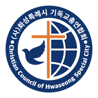
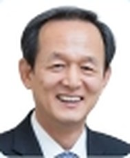
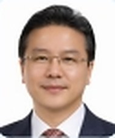
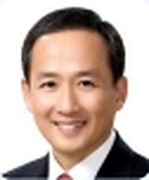
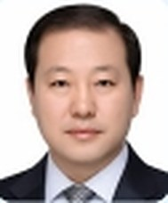
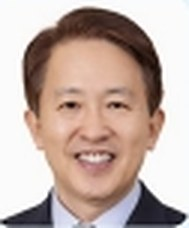
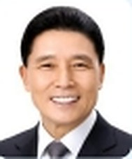
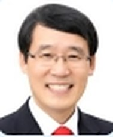
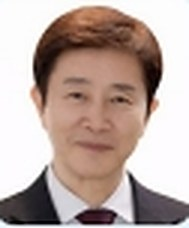
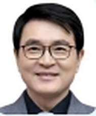

행사별로 정리한 유튜브 영상입니다. 버튼을 누르면 유튜브에서 바로 열립니다.
화기총티비 채널 바로가기








증경회장 한영식 목사 · 김도순 목사 · 정관영 목사 · 진인문 목사 · 김춘현 목사 · 김종택 목사 · 장철수 목사 · 조시현 목사 · 최기용 목사 · 이명식 목사 · 홍인덕 목사 · 박안규 목사
2025년 · 2024년 12월 9일 개정 · 8장 19조
제1조 본회의 명칭은 “(사)화성시기독교총연합회”라 칭한다.
제2조 본회 회원의 자격은 화성시 지역 내(5개지역: 동부,중부,서부,삼괴,동탄)담임목회자와 단체 기관장 목사로 한다.
제3조 본회의 목적은 화성 지역 내에 소재한 각 복음주의 교회의 친목을 도모하며 지역 복음화 운동을 목적으로 한다.
제4조 본회의 사무실은 대표회장이 시무하는 교회에 둔다.
소재지: 경기도 화성시 동탄지성로 152
제5조 본회의 조직은 화성시 지역에 소재한 각 교회 담임 목회자 및 단체기관장 목사로 하며, 단, 피선거권은 회원가입 후 1년을 경과해야 한다.
제6조 임원
1) 대표회장 1인
2) 상임회장 1인
3) 공동회장 약간명으로 한다(교단안배 및 지역회장)
4) 사무총장 1인
5) 사무차장 1인
6) 상임총무 1인
7) 지역총무
8) 서기 1인
9) 부서기 1인
10) 회계 1인
11) 부회계 1인
12) 감사 2인
13) 고문
제7조 위원회
1) 복음화 위원회
2) 기도 위원회
3) 해외선교 위원회
4) 체육 위원회(축구부, 탁구부)
5) 복지선교 위원회
6) 이단 사이비 대책 위원회
7) 삼일운동기념사업단
*필요에 따라 위원회를 가감할 수 있다.
제8조 본회의 임원 직무는 다음과 같다.
1) 고문 : 대표회장을 역임한 자를 고문으로 추대한다.
2) 대표회장 : 본회를 대표하며 회무를 총괄한다.
3) 상임회장 : 대표회장을 보좌하며 대표회장 유고시 그 직무를 대행한다.
4) 공동회장 : 소속교단과 지역을 대표하며 상임회장과 공동으로 대표회장을 보좌한다. 상임회장이 유고시 고문회의에서 선출하여 잔여기간 동안 상임회장 직무를 대신하게 한다.
5) 지역회장 : 각 지역을 대표하며 각 지역의 회무를 총괄한다.
6) 사무총장 : 대표회장의 지시하에 본회의 제반 업무를 총괄한다.
7) 사무차장 : 사무총장을 보좌하며 사무총장 유고시 그 직무를 대행한다.
8) 상임총무 : 사무총장을 보좌하며 각 지역의 행사 및 의사소통을 전달한다.
9) 지역총무 : 상임총무를 보좌하며 상임총무가 유고시 고문회의에서 선출하여 잔여기간 동안 상임총무 직무를 대신하게 한다.
10) 서기 : 본회의 문서를 정리하고 보관한다.
11) 부서기 : 서기를 보좌하며 유고시 대리한다.
12) 회계 : 본회의 재정을 관리하며 회의 결과에 따라 출납 정리한다.
13) 부회계 : 회계를 보좌하며 유고시 대리한다.
14) 감사 : 본 회의 재정을 감사한다.
제9조 각 위원회의 직무는 다음과 같다.
1) 복음화 위원회 : 화성시 복음화를 위한 제반 행사를 주관한다.
2) 기도 위원회 : 각 지역연합회의 기도를 주관하고 기도운동에 관한 제반업무를 담당한다.
3) 해외선교 위원회 : 해외선교와 관계된 제반 업무를 담당한다.
4) 체육 위원회 : 회원들의 친목 및 체육에 관계된 제반 업무를 담당한다.
5) 복지선교 위원회 : 회원교회의 복지선교를 돕고 화성시의 복지도시화에 힘쓴다.
6) 이단 사이비 대책 위원회 : 국내외 이단들의 실체를 파악하여 교육하고 문서를 제작하고 배포하여 이단을 경계토록 하는 사역을 담당한다.
7) 삼일운동기념사업단 : 화성시 삼일운동기념사업을 총괄한다.
제10조 차기 대표회장은 상임회장이 자동으로 되며, 본 회 임원은 매년 정기총회에서 전 현직 총(대표)회장단으로 구성된 전형위원회에서 선출하되 총회에 보고하며 임기는 1년으로 한다.
단, 대표회장은 단임으로 하며 결원 시에는 임시총회에서 보선하고 기타 임역원은 임원회에서 보선하며 그 임기는 잔여기간으로 한다. 단, 상임회장은 공동회장으로 3년간 회비를 납부한 자로 한다.
제11조 각 위원회는 임원회에서 공천하여 본 회의 인준을 받으며 각 위원회를 조직, 보고한다.
제12조 정기총회는 1년 1회로 하며 임원회의 결의에 따라 일시와 장소는 조정할 수 있다.
임시총회는 임원회의의 결의에 따라 실시한다.
제13조 정기회의는 3개월에 1회로 한다.
제14조 임(역)원회는 필요에 따라 수시로 하되 대표회장이 이를 소집한다.
제15조 위원회 회의는 필요에 따라 위원장이 소집하되 대표회장의 허락으로 한다.
제16조 재정은 연회비 (전회장:30만원, 대표회장:300만원, 상임회장:150만원, 공동회장:30만원 각 지역회 50만원, 헌금 및 특별 찬조금으로 한다. 연회비 미납자는 회원자격을 상실한다.
제17조 재정 감사는 감사를 거쳐 총회에 서면보고 한다.
제18조 본 회의 회칙을 개정코자 할 시에는 출석 회원의 2/3 찬성으로 한다.
제19조 본 회칙은 통과일로부터 시행한다.
제정 및 개정 연혁